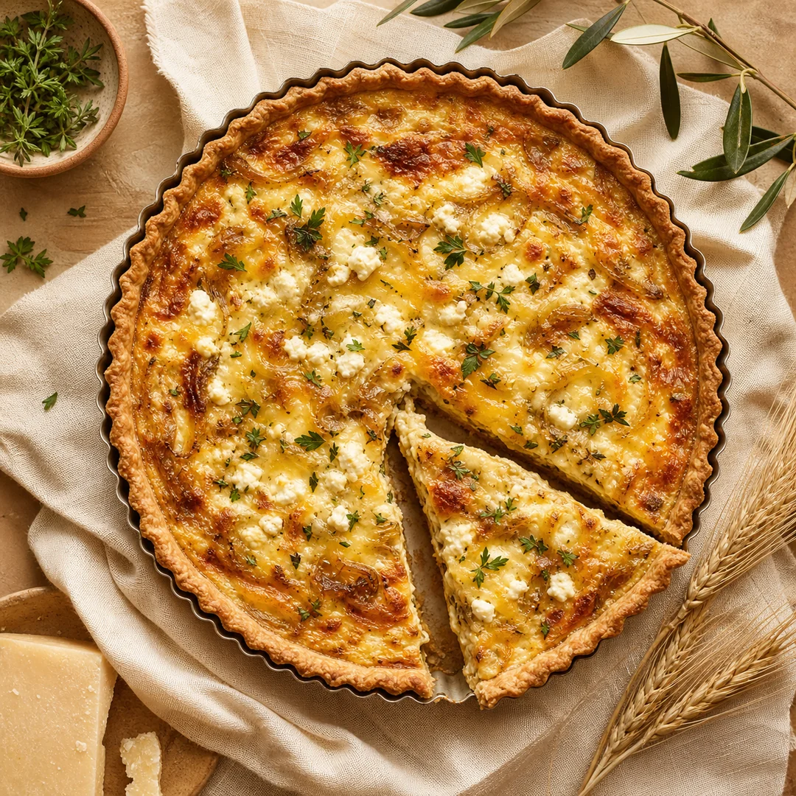
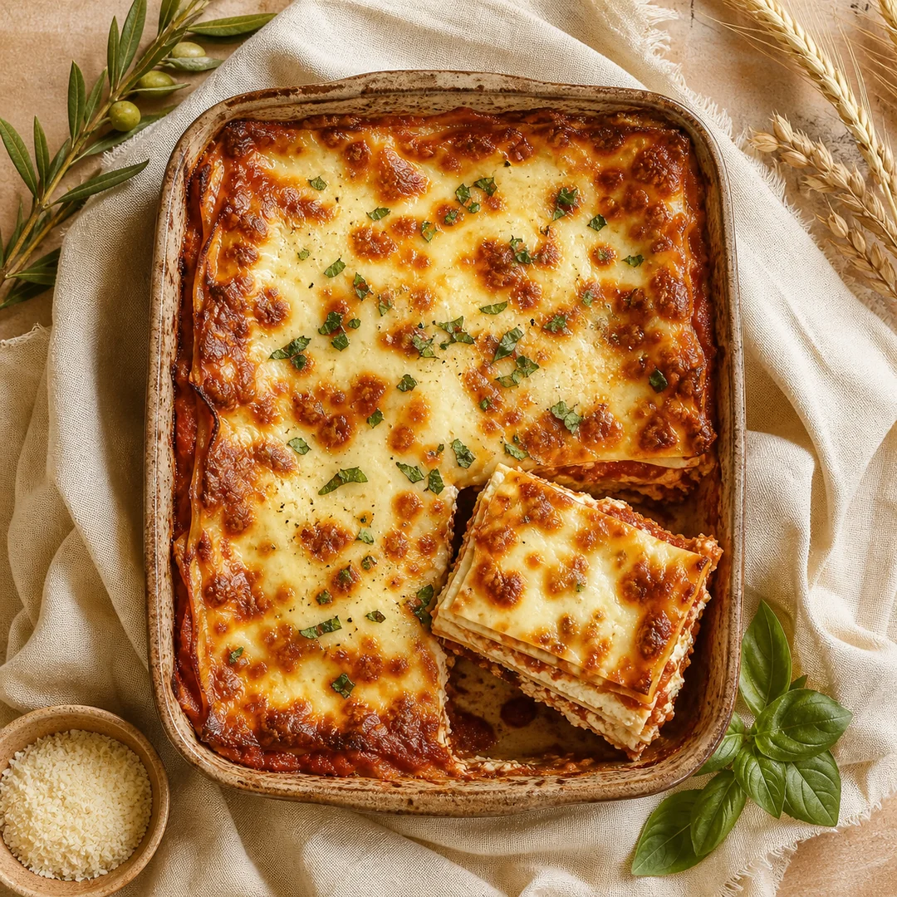
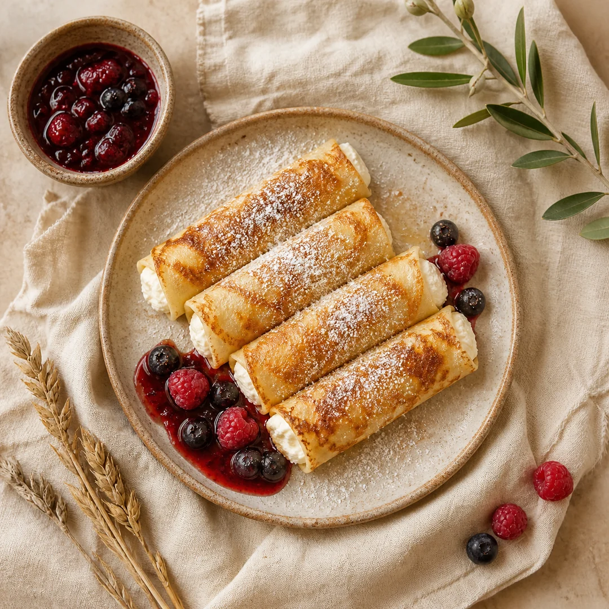
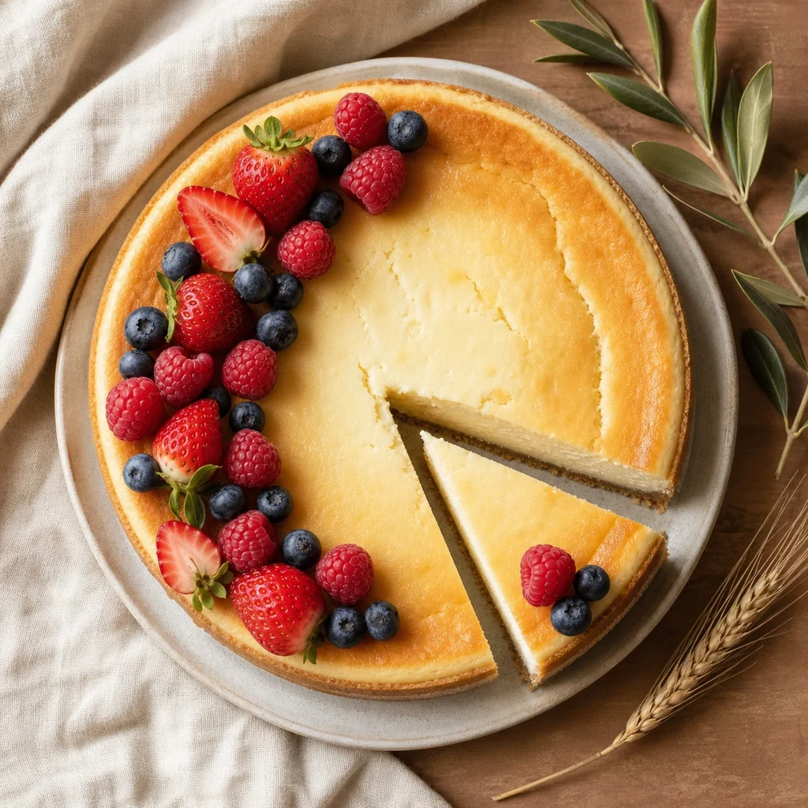
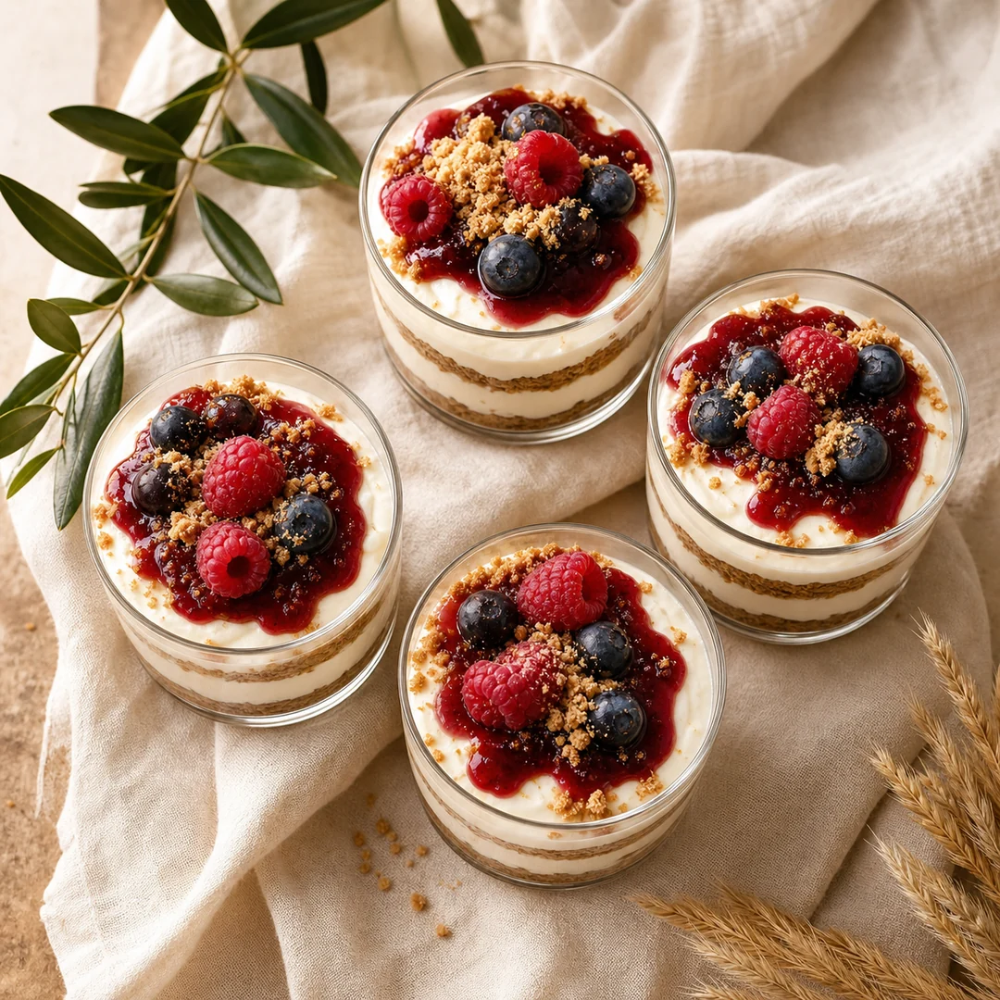

חג שבועות ✦ תשפ״ו
מהמטבחים
שלנו
~ אוסף מתכונים מהבית ~
חג חלב ודבש
חמישה מתכונים · חמש משפחות
מוקדש באהבה לנשות המילואים
בשיתוף


הקדשה
לנשות המילואים
בשעה שהבעלים בשירות, אתן מחזיקות את הבית, את הילדים,
ואת השולחן החגיגי.
החוברת הזו היא חיבוק קטן מאיתנו אליכן -
אוסף מתכונים מהמטבחים של החברות בגדוד,
כדי שגם חג שבועות הזה יהיה לבן, מתוק, ומלא טעם של בית.
״וְשָׂמַחְתָּ בְּחַגֶּךָ, אַתָּה וּבִנְךָ וּבִתֶּךָ…״
דברים ט״ז, י״ד
חג שמח, בריאות ובשורות טובות.
2
תוכן עניינים
מה בפנים
~ חמישה מתכונים לשולחן החג ~
- 01 קיש גבינות חגיגי משפחת מזרחי · גדוד 240 עמ׳ 06
- 02 לזניה גבינות חגיגית משפחת אברהם · גדוד 945 עמ׳ 08
- 03 בלינצ׳ס גבינה מתוקים משפחת לוי · גדוד 350 עמ׳ 10
- 04 עוגת גבינה אפויה קלאסית משפחת כהן · גדוד 6080 עמ׳ 12
- 05 עוגת גבינה קרה בכוסות משפחת ביטון · גדוד 7717 עמ׳ 14
חלב · דבש · חיטה
שבועות תשפ״ו · 2026
3
מתכון · 01 / 05
מנה עיקרית · אפייה
קיש גבינות
חגיגי
באדיבות משפחת מזרחי · גדוד 240

~ מצרכים ~
- לבצק
- 250 גרם קמח
- 125 גרם חמאה קרה, חתוכה לקוביות
- 1 ביצה
- 3 כפות מים קרים
- קורט מלח
- למילוי
- 4 ביצים
- 200 מ״ל שמנת מתוקה 38%
- 100 מ״ל חלב
- 150 גרם גבינה צהובה מגוררת
- 100 גרם גבינת פטה מפוררת
- 100 גרם מוצרלה מגוררת
- 1 בצל סגול, פרוס דק ומאודה
- מלח, פלפל שחור, אגוז מוסקט
~ אופן ההכנה ~
- לבצק: מערבבים קמח, חמאה ומלח עד שמתקבלים פירורים. מוסיפים ביצה ומים, לשים בקצרה לכדור. עוטפים בניילון ומקררים 30 דקות.
- מרדדים את הבצק לעובי 3–4 מ״מ. מעבירים לתבנית קיש בקוטר 26 ס״מ, חותכים עודפים, ודוקרים את התחתית במזלג. מקררים 15 דקות.
- מחממים תנור ל-180°. מכסים את הבצק בנייר אפייה ומשקלים בשעועית או אורז. אופים 12 דקות, מסירים, ואופים עוד 5 דקות.
- מטגנים את הבצל בכפית שמן זית עד שמתרכך ומזהיב. מצננים.
- בקערה טורפים ביצים, שמנת, חלב, מלח, פלפל ואגוז מוסקט.
- מפזרים את הגבינות והבצל המאודה על בסיס הבצק האפוי. שופכים את תערובת הביצים מעל.
- אופים 30–35 דקות עד שהמילוי יציב והחלק העליון זהוב יפה.
- נחים 10 דקות לפני הפריסה. מגישים חם או בטמפרטורת החדר.
6
מתכון · 02 / 05
מנה עיקרית · תבנית
לזניה גבינות
חגיגית
באדיבות משפחת אברהם · גדוד 945

~ מצרכים ~
- 1 חבילה דפי לזניה (250 גרם)
- 500 גרם רוטב עגבניות איכותי
- 500 גרם גבינת ריקוטה או קוטג׳ 5%
- 300 גרם גבינת מוצרלה מגוררת
- 100 גרם גבינה צהובה מגוררת
- 50 גרם פרמזן מגורר
- 2 ביצים
- 1/4 כוס פטרוזיליה קצוצה
- 2 כפות בזיליקום טרי קצוץ
- 3 שיני שום כתושות
- מלח, פלפל שחור
~ אופן ההכנה ~
- מחממים תנור ל-180°.
- בקערה גדולה מערבבים: ריקוטה (או קוטג׳), ביצים, חצי מכמות המוצרלה, פטרוזיליה, בזיליקום, שום, מלח ופלפל.
- בתבנית פיירקס בגודל 22×33 ס״מ: יוצקים שכבה דקה של רוטב עגבניות בתחתית.
- מסדרים שכבה של דפי לזניה (אם יבשים, אפשר להשרות במים חמים 5 דק׳). מעליהם: תערובת הגבינות, ואז שכבה דקה של רוטב.
- חוזרים על השכבות 3–4 פעמים. מסיימים בשכבת דפי לזניה ורוטב עגבניות למעלה.
- מפזרים מעל את שאר המוצרלה, הגבינה הצהובה והפרמזן.
- מכסים בנייר אלומיניום (לא נוגע בגבינה) ואופים 30 דקות.
- מסירים את הנייר ואופים עוד 15–20 דקות עד שהחלק העליון זהוב ובועבע.
- נחים 10 דקות לפני הפריסה. מגישים חם.
8
מתכון · 03 / 05
מנה ראשונה · מטוגן
בלינצ׳ס גבינה
מתוקים
באדיבות משפחת לוי · גדוד 350

~ מצרכים ~
- לחצופיות
- 1 כוס קמח (150 גרם)
- 2 ביצים
- 1 כוס חלב
- 1/2 כוס מים
- 2 כפות חמאה מומסת
- 1 כף סוכר
- קורט מלח
- למילוי
- 500 גרם גבינה לבנה 9%
- 1 ביצה
- 3 כפות סוכר
- 1 כפית תמצית וניל
- חופן צימוקים (אופציונלי)
~ אופן ההכנה ~
- מערבבים את כל חומרי החצופיות במיקסר או בלנדר עד שהתערובת חלקה לחלוטין. מנוחה במקרר 30 דקות.
- מחממים מחבת לא נדבקת בקוטר 20 ס״מ, מורחים מעט חמאה. יוצקים מצקת קטנה ומפזרים בסיבוב המחבת לכיסוי דק.
- מטגנים כדקה מכל צד עד שהחצופית מתייצבת ומזהיבה קלות. מעבירים לצלחת. ממשיכים עד סיום הבלילה (כ-12–14 חצופיות).
- למילוי: מערבבים בקערה גבינה, ביצה, סוכר, וניל וצימוקים (אם משתמשים) עד אחידות.
- מניחים על כל חצופית כף גדושה של מילוי במרכז. מקפלים את שני הצדדים פנימה ואז מגלגלים לסיגר.
- מטגנים את הבלינצ׳ס בחמאה במחבת על אש בינונית-נמוכה, כ-2 דקות מכל צד עד להזהבה.
- מגישים חמים עם רוטב פירות יער, סילאן או אבקת סוכר.
10
מתכון · 04 / 05
קינוח · אפייה
עוגת גבינה אפויה
קלאסית
באדיבות משפחת כהן · גדוד 350

~ מצרכים ~
- 200 גרם ביסקויטים פתי בר
- 100 גרם חמאה מומסת
- 750 גרם גבינה לבנה 5% (3 גביעים)
- 200 מ״ל שמנת חמוצה
- 1 כוס סוכר (200 גרם)
- 4 ביצים גדולות, מופרדות
- 3 כפות קורנפלור
- 1 כפית תמצית וניל
- גרידה מלימון אחד
~ אופן ההכנה ~
- מחממים תנור ל-160°. מרפדים תבנית קפיצית בגודל 24 ס״מ בנייר אפייה.
- כותשים את הביסקויטים, מערבבים עם החמאה המומסת ולוחצים היטב בתחתית התבנית. מקררים 15 דקות.
- בקערה גדולה מערבבים: גבינה לבנה, שמנת חמוצה, 3/4 כוס מהסוכר, קורנפלור, וניל, חלמונים וגרידת לימון, עד להומוגניות.
- בקערה נפרדת מקציפים את החלבונים עם 1/4 כוס הסוכר שנותר עד לקצף יציב.
- מקפלים בעדינות את החלבונים לתערובת הגבינה. אסור לערבב חזק - שומרים על האווריריות.
- שופכים על בסיס הביסקויטים ומחליקים את פני השטח.
- אופים 60–70 דקות, עד שהמרכז עוד רוטט קלות. מכבים את התנור ומשאירים את העוגה בפנים עוד 30 דקות עם הדלת פתוחה מעט.
- מקררים לפחות 4 שעות, רצוי לילה שלם. מגישים עם פירות יער טריים.
12
מתכון · 05 / 05
קינוח · ללא אפייה
עוגת גבינה קרה
בכוסות
באדיבות משפחת ביטון · גדוד 7717

~ מצרכים ~
- 500 מ״ל שמנת להקצפה 38%
- 500 גרם גבינת שמנת או גבינה לבנה 9%
- 1 כוס סוכר (200 גרם)
- 1 שקית אינסטנט פודינג בטעם וניל
- 200 גרם ביסקויטים פתי בר
- 50 גרם חמאה מומסת
- 1 כפית תמצית וניל
- מחית פירות יער או רוטב פירות לקישוט (אופציונלי)
~ אופן ההכנה ~
- כותשים את הביסקויטים בפודמיק או בשקית עם מערוך עד פירורים. מערבבים עם החמאה המומסת.
- בקערת מיקסר עם וו הקצפה: מקציפים את השמנת עם הסוכר ופודינג הוניל 3–4 דקות עד לקצף יציב.
- מוסיפים את הגבינה והוניל בכפות, ממשיכים לערבב במהירות נמוכה עד אחידות מלאה.
- מכינים 8 כוסות הגשה. בכל כוס: שכבה של פירורי ביסקויטים בתחתית.
- מעל הביסקויטים: שכבת קרם גבינה. חוזרים על השכבות פעם נוספת.
- מסיימים עם קרם גבינה, מפזרים מעט פירורי ביסקויטים לקישוט.
- מקררים לפחות 4 שעות, רצוי לילה. לפני ההגשה מוסיפים מחית פירות יער למעלה אם רוצים.
14
סיום
בתאבון
תודה לכל המשפחות שפתחו את המטבח, ולכל הנשים שמחזיקות את הבית באהבה.
משפחת כהן
משפחת לוי
משפחת מזרחי
משפחת ביטון
משפחת אברהם
16